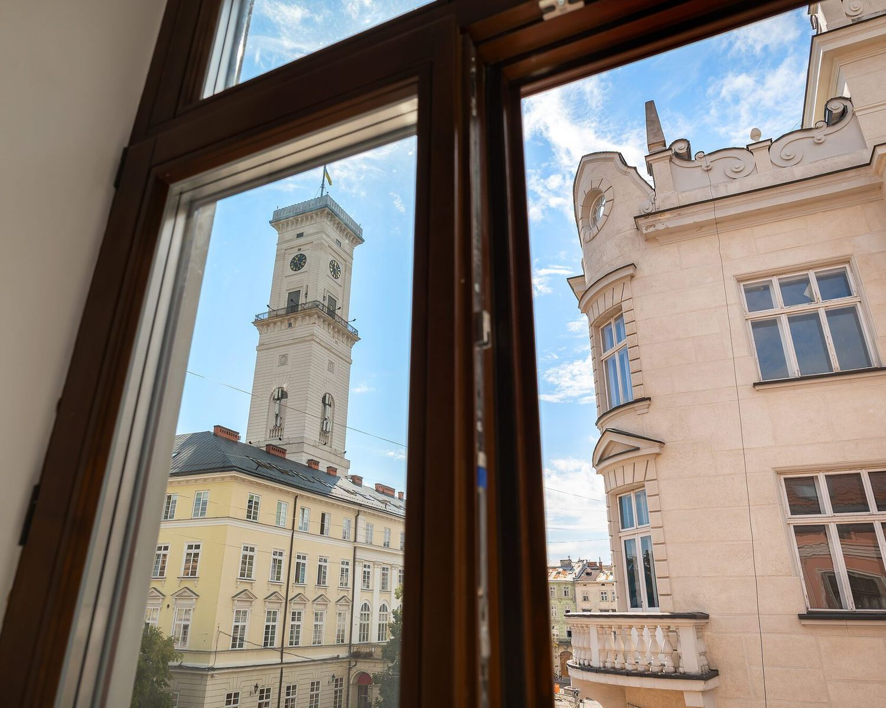

01Ви тут · вул. Шевська, 4
Історія · чотири кам'яниці XV–XIX ст.
Об'єкт ЮНЕСКО з 1998 року
Історія місця і родини Боїмів
Готель займає чотири історичні кам'яниці XV–XIX століть у Старому місті. Головний дім — Кам'яниця Дзюрджівська, XVIII століття, пов'язана з родиною Боїмів.
Хроніка
1576
Дзюрджі Бойм у Львові
Купець, секретар короля Стефана Баторія, згодом бургомістр.

1609–1615
Каплиця Боїмів
Збудовано Каплицю Боїмів.
—
Павло-Юрій Бойм
Син Дзюрджі — лікар короля Сигізмунда III.

1656
Михал Бойм, «Flora Sinensis»
Онук Дзюрджі — місіонер у Китаї, автор «Flora Sinensis».
1782
Династія Бачевських
Горілчана марка, постачальник цісарсько-королівського двору Австро-Угорщини.
2022
Відкриття готелю
Best Western Plus Market Square Lviv — перший Best Western в Україні.
Що збереглося
Підвали, сходи, кладка
Середньовічні підвали, дерев'яні сходи, вікна, двері, цегляна кладка. Назви трьох інших кам'яниць уточнюються [CONFIRM].


Умовні фото: окремих знімків підвалів і сходів немає.
«У Львові можна загубитися — і знайти себе.»Маркіян Прохасько